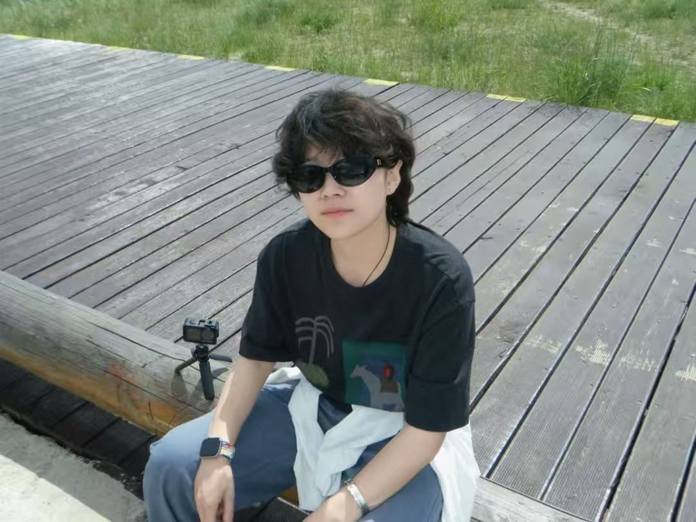

视觉设计 / 摄影 / 短片 / 策划
浏览作品 ↓吕佳霓 / SELECTED PROJECTS
你好，我是吕佳霓
视觉设计与
影像创作
我学习数字媒体艺术，喜欢从一个产品或一个地方出发，用摄影、短片和视觉设计讲故事。

吕佳霓数字媒体艺术 · 视觉与影像
Trozk 特洛克积木插板
让积木车载着插板穿过雪山、沙漠、草地与月球，用四组微缩场景拍摄同一款产品。
商业摄影 · 4 张
YSL · 微观旅途
让一辆微缩小车运送粉气垫，用比例反差呈现产品的轻盈质感。
产品短片
密令 · YSL 粉气垫
把粉气垫放进一段悬疑叙事，用冷灰场景衬出粉色绗缝和金色标志。
悬疑人物短片
超能，洗掉生活的褶皱
把通勤与工作的压力化作衣物上的污渍，让洗护成为短片的情绪转折。
AI 短视频广告 · 省赛二等奖
义乌造：万物有趣
用「趣、饰、文、物」四张动态海报，呈现义乌小商品的不同面貌。
动态海报 · 4 支
追光计划
以运动场景为线索，为超能运动洗护梳理传播方向。
超能 SupNice · 运动洗护营销策划
穿香入画 · 植愈成诗
以「穿香入画」为主题，策划超能植愈系列的新媒体传播。
超能植愈 · 新媒体营销策划
《驯龙高手》分镜头设计
拆解一段飞行戏，用 131 格分镜记录景别、动作和镜头节奏。
拉片练习 · 131 个镜头 · 2 分 58 秒
汤小圆
从浙江节气饮食中提取汤圆元素，设计角色、节气海报与周边。
IP 形象设计 · 浙江节气饮食文化
青釉执明
以王阳明与阳明心学为灵感，将青瓷、乌纱帽和松厦伞转化为两个国风角色，延展到表情包、海报和文创周边。
IP 形象设计 · 阳明文化与浙东元素
曹娥里十三弄
从街巷、门号与日常场景提取图形，延伸到街区标识和品牌物料。
品牌视觉 · 街区传播
先别 emo，先 AD 一口
围绕 AD 钙奶与年轻人的情绪，设计一句口号和一支广播广告。
AI 广播广告 · 省赛二等奖